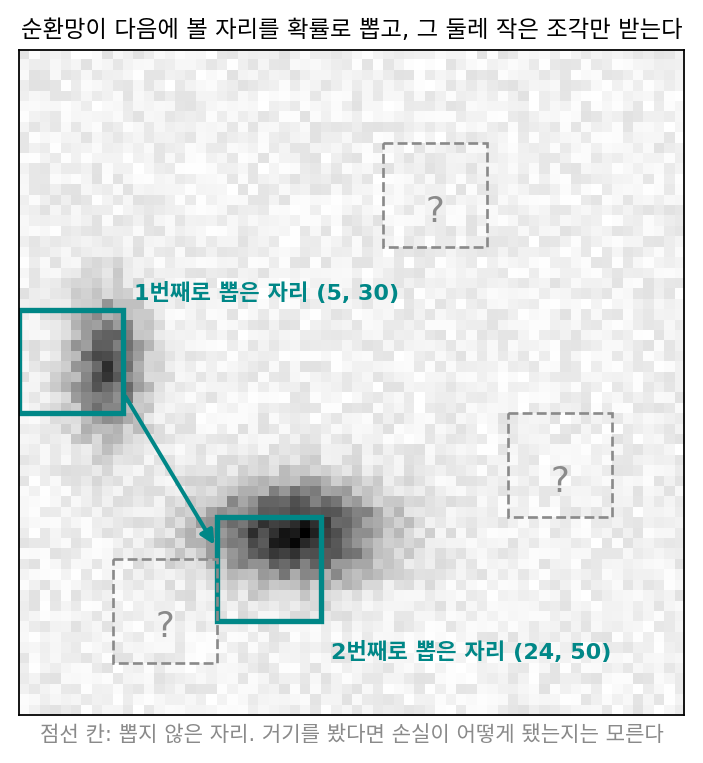
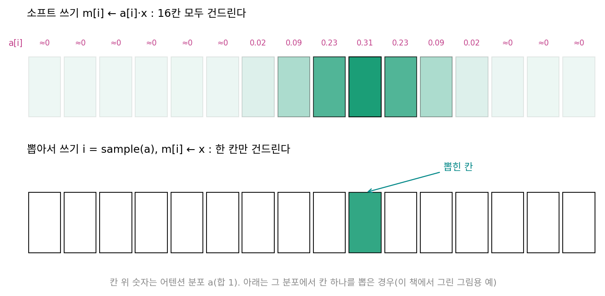
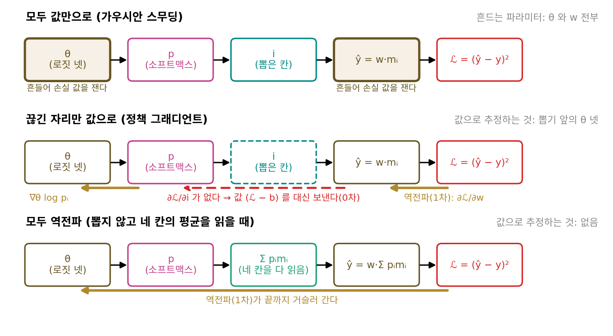
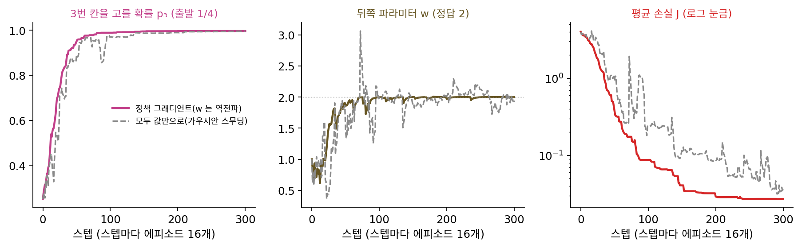
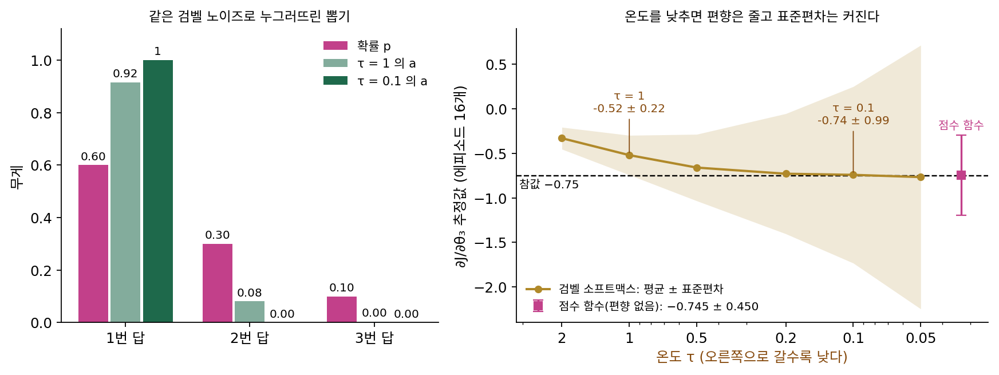
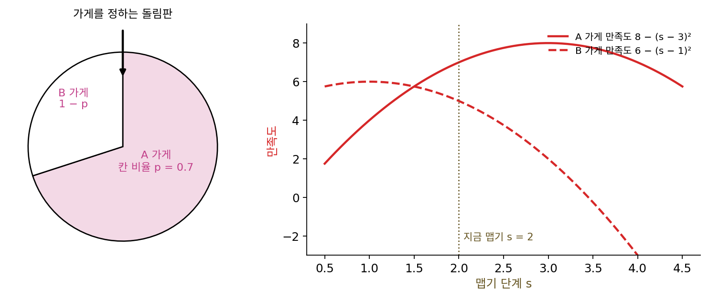
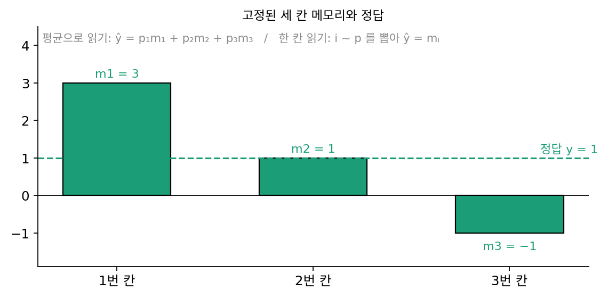
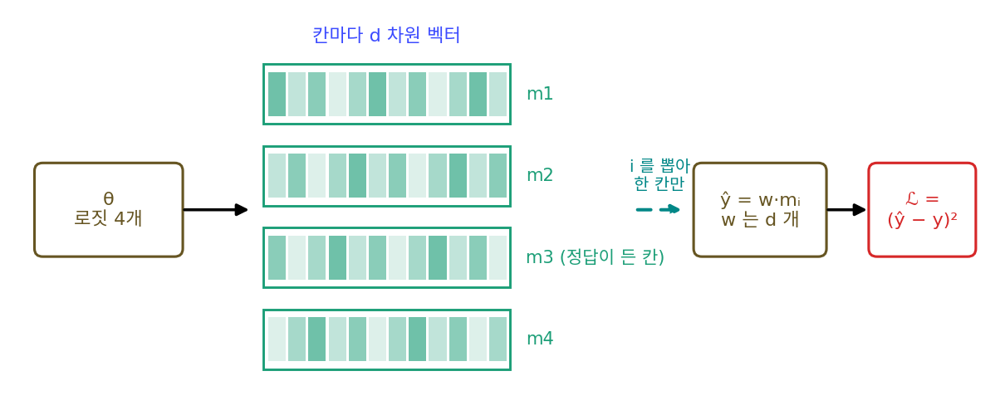

정책 그래디언트: 뽑기에서 끊긴 미분을 값으로 잇기
가우시안 스무딩에서 흐리게 한 함수의 그래디언트는 함숫값만으로 적혔고, 그 꼴은 「뽑은 점의 함숫값 × 그 점을 뽑을 로그 확률의 그래디언트」의 평균이라 강화학습의 REINFORCE 와 같았다. 그런데 함숫값만 쓰는 데는 값이 따랐다. 네스테로프와 스포코이니가 보였듯 0차 방법은 그래디언트를 쓰는 방법보다 대략 차원 수 배의 스텝이 들고, 신경망의 파라미터는 수백만 개다. 신경망은 다행히 식을 아는 함수라서, 보통은 역전파(그래디언트를 한 번의 거꾸로 계산으로 정확히 얻는 방법)로 그래디언트를 싸게 얻는다.
곤란한 것은 신경망 한가운데에서 무언가를 확률로 뽑을 때다. 언어 모델은 다음 토큰을 확률에 따라 하나 뽑고, 큰 그림의 일부만 보는 모델은 다음에 볼 자리를 뽑는다. 파이토치에서 torch.distributions.Categorical(logits=…).sample() 로 칸 하나를 뽑아 보면 결과는 정수(torch.int64)이고 grad_fn 이 None 이라, backward() 가 거꾸로 보내는 신호는 그 자리에서 멈춘다. 뽑기 뒤의 계산도, 뽑기 앞에서 확률을 만드는 계산도 식을 다 아는데, 가운데 한 자리 때문에 앞쪽 파라미터를 모두 함숫값만으로 다뤄야 할까? 끊긴 자리만 값으로 추정하고 나머지는 역전파로 정확히 구해서, 0차와 1차 사이에 다리를 놓을 수는 없을까?
역사: 카파시가 신경망 안의 뽑기를 정책 그래디언트로 넘자고 하다
2016년 5월 31일 안드레이 카파시(Andrej Karpathy)는 자기 블로그에 「심층 강화학습: 픽셀에서 퐁까지(Deep Reinforcement Learning: Pong from Pixels)」를 올렸다. 아타리 게임 퐁(공을 받아 넘기는 탁구 게임)의 화면 픽셀을 받아 라켓을 올릴 확률을 내는 2층 신경망을, 이긴 판의 행동은 확률을 올리고 진 판의 행동은 내리는 정책 그래디언트로 학습시키는 글이었다.
글 끝 무렵 그는 게임과 관계없는 쓰임 하나를 따로 짚었는데, 「신경망 안의 미분할 수 없는 계산(Non-differentiable computation in Neural Networks)」이라는 대목이다. 본보기는 2014년 볼로디미르 므니(Volodymyr Mnih)와 동료들의 논문 「시각 어텐션의 순환 모델(Recurrent Models of Visual Attention)」이 「하드 어텐션」이라는 이름으로 널리 알린 모델이었다. 이 모델의 순환망은 그림을 한 번에 다 보지 않고, 스텝마다 그림의 작은 조각 하나를 받은 뒤 다음에 볼 자리를 확률분포에서 뽑는다. 카파시는 이 뽑기가 미분되지 않는 이유를 「다른 자리를 뽑았다면 무슨 일이 일어났을지 모르기 때문」이라고 적었다.

그의 처방은 뽑기를 하는 부분을 「더 큰 신경망 안에 박힌 작은 확률적 정책」으로 보는 것이었다. 학습할 때 여러 번 뽑아 보고, 끝에서 잰 손실이 낮았던 뽑기를 북돋는다. 미분할 수 있는 화살표의 파라미터는 늘 하던 대로 역전파로 학습하고, 뽑기 화살표의 파라미터만 정책 그래디언트로 업데이트한다. 그는 이 생각이 1992년 윌리엄스의 논문에서 처음 나왔고, 2015년 존 슐먼(John Schulman)과 동료들의 논문 「확률적 계산 그래프를 이용한 그래디언트 추정(Gradient Estimation Using Stochastic Computation Graphs)」이 깔끔하게 정리했다고 덧붙였다.
둘째 예는 메모리였다. 뉴럴 튜링 머신(Neural Turing Machine)은 바깥 메모리 테이프에 값을 쓰고 읽는데, 「i 번째 칸에 x 를 써라」라는 연산은 다른 칸 j 에 썼다면 손실이 어떻게 됐을지 알려 주는 신호가 없어 미분되지 않는다. 그래서 뉴럴 튜링 머신은 합이 1인 어텐션 분포 a 를 예측해 모든 칸에 m[i] ← a[i]·x 를 쓰는 소프트 쓰기를 한다. 미분은 되지만 한 칸에 쓰려고 모든 칸을 건드려야 해서, 카파시는 「컴퓨터의 대입문 하나하나가 램 전체를 건드려야 한다고 상상해 보라」고 적었다. 2015년 보이치에흐 자렘바(Wojciech Zaremba)와 일리야 수츠케버(Ilya Sutskever)의 RL-NTM 은 같은 분포에서 쓸 칸을 하나 뽑아 그 칸에만 쓰고, 그 뽑기를 정책 그래디언트로 학습했다. 다 만든 모델은 한 칸만 읽고 쓰면 되는 큰 이득이 있었지만, 카파시는 논문이 짚은 대로 이 방법은 뽑다가 우연히 제대로 돌아가는 알고리즘에 걸려들어야 해서 학습시키기가 무척 어렵다고 했다. 그리고 그때의 대체적인 생각은 정책 그래디언트가 고를 것이 몇 개뿐인 경우에만 잘 듣는다는 것이었다고 적었다.


뽑기가 미분이 안 되면 그냥 소프트 쓰기로 하면 되잖아요. 미분도 되고, 건드리는 칸이 좀 많아지는 것뿐인데요.

칸이 몇 개면 「좀」일까요? 카파시가 든 대입문 비유를 떠올려 봐요.

아… 메모리가 백만 칸이면 한 칸 쓰는 데 백만 칸을 고치는 거네요. 학습할 때야 참는다 쳐도, 다 만든 모델을 쓸 때까지 그러면 곤란하겠어요.

그런데 뽑아서 쓰는 쪽은 학습이 무척 어려웠다고 했잖아요. 칸이 많으면 좋은 칸을 우연히 뽑을 때까지 한참 걸릴 테니까요.

그래서 카파시도 「고를 것이 몇 개뿐일 때만 잘 듣는다」는 말을 그대로 적었어요. 미분이 되는 길은 비싸고, 싼 길은 학습이 잘 안 되는 사이에서 골라야 했던 거죠.

정책 그래디언트도 결국 가우시안 스무딩처럼 값으로 추정하는 거잖아요. 그 추정을 신경망 전체가 아니라 뽑는 자리 하나에만 쓰면 대가가 얼마나 줄어드는지, 칸이 몇 개 안 되는 작은 예로 직접 재 보고 싶어요.
네 칸 메모리에서 한 칸 읽기
뽑기 앞에도 뒤에도 학습할 파라미터가 있는 가장 작은 경우를 골라 보자. 칸이 넷뿐이면 네 경우를 모두 세어 평균을 정확히 계산할 수 있으므로, 뽑아서 얻은 추정값이 얼마나 맞는지 견줄 수 있다.
에피소드마다 메모리 네 칸에 표준정규분포에서 뽑은 수 m₁, m₂, m₃, m₄ 가 새로 들어오고, 정답은 y = 2m₃ 이다. 모델은 이 규칙을 모른다. 뽑기 앞의 파라미터는 칸마다 하나씩인 로짓(소프트맥스에 넣기 전의 점수) θ₁, …, θ₄ 이고, 소프트맥스를 거쳐 칸을 고를 확률 p₁, …, p₄ 가 된다. 모델은 이 확률로 칸 i 를 하나 뽑아 그 칸의 값 mᵢ 만 읽고, 뽑기 뒤의 파라미터 w 를 곱해 ŷ = w·mᵢ 를 내놓는다. 손실은 𝓛 = (ŷ − y)² 이고, 줄이고 싶은 것은 에피소드와 뽑기에 대한 평균 손실 J 다. 3번 칸을 고르고 w = 2 로 두면 손실이 0 이 된다.
출발은 θ = 0(네 칸을 1/4씩), w = 1 이다. 3번이 아닌 칸을 읽으면 ŷ − y = wmᵢ − 2m₃ 은 서로 독립인 두 정규분포의 합이라 평균 손실이 w² + 4 = 5 이고, 3번 칸을 읽으면 (w − 2)² = 1 이다. 그래서 J = 0.75 × 5 + 0.25 × 1 = 4 다.
w 쪽 그래디언트는 어렵지 않다. 칸이 뽑히고 나면 w 에서 손실까지는 보통의 식이라, 그 에피소드의 미분 2(wmᵢ − y)mᵢ 를 역전파로 정확히 얻고, 평균하면 1.0 이다. θ 쪽 그래디언트는 그렇게 얻을 수 없다. θ₃ 을 올리면 3번 칸이 더 자주 뽑혀 평균 손실이 줄 것은 분명하고, 네 경우를 다 세면 ∂J/∂θₖ = pₖ × (칸 k 의 평균 손실 − J) 이므로 (0.25, 0.25, −0.75, 0.25) 다. 하지만 실제 학습에서는 뽑힌 칸의 손실 하나만 보이고, 「다른 칸을 뽑았다면」의 손실은 보이지 않는다. 여기서 가우시안 스무딩의 식을 그대로 쓴다. 뽑힌 칸의 손실에 그 칸을 뽑을 로그 확률의 그래디언트를 곱해 평균하면 되는데, 소프트맥스에서 log pᵢ 를 θ 로 미분하면 뽑힌 칸 자리에만 1 이 있는 벡터 eᵢ 에서 확률 벡터 p 를 뺀 eᵢ − p 가 된다.
둘째 식은 역전파가 하는 일이고, 셋째 식은 가우시안 스무딩에서 본 「값 × 로그 확률의 그래디언트」다. b 를 빼도 평균이 바뀌지 않는 것은 가우시안 스무딩에서 f(x) 를 빼도 됐던 것과 같은 이유로, eᵢ − p 의 평균이 0 이기 때문이다. 에피소드 16개로 한 번 추정하기를 2,000번 되풀이하면 다음과 같다.
| 그래디언트 | 참값 | 에피소드 16개로 한 번 추정(2,000번의 평균 ± 표준편차) |
|---|---|---|
| ∂J/∂θ₃, 점수 함수 | −0.75 | −0.745 ± 0.450 |
| ∂J/∂θ₁, 점수 함수 | +0.25 | +0.235 ± 0.887 |
| ∂J/∂w, 역전파 | +1.00 | +0.959 ± 1.172 |
| ∂J/∂w, 값만으로(w 를 σ = 0.1 로 흔든 가우시안 스무딩) | +1.00 | +1.024 ± 2.167 |
넷 모두 평균이 참값 둘레에 있으니, θ 쪽은 손실의 값만 썼는데도 평균이 맞는다. w 쪽을 굳이 값만으로 추정하면, 같은 에피소드 16개를 쓰고 파라미터가 하나뿐인데도 표준편차가 1.17 에서 2.17 로 두 배 가까이 커진다.
이렇게 신경망 안에서 확률로 고르는 부분을 정책으로 보고, 그 파라미터의 그래디언트를 「뽑힌 결과의 손실(에서 베이스라인을 뺀 값) × 그 결과를 뽑을 로그 확률의 그래디언트」의 평균으로 추정하는 것을 정책 그래디언트 (뽑기 앞 파라미터의 그래디언트를 로그 확률로 추정하기 / policy gradient)라 한다. 정책은 강화학습에서 상황마다 행동을 고르는 확률 규칙을 부르는 말이고, 이 장난감에서는 어느 칸을 읽을지 고르는 확률 p 가 정책이다. 아래 그림의 가운데 줄처럼 끊긴 자리에서만 미분 대신 값 (𝓛 − b) 를 거꾸로 보내고, 그 뒤와 앞은 역전파가 맡는다.

파이토치로는 손실 하나를 고쳐 적으면 backward() 한 번으로 두 그래디언트가 함께 나온다.
dist = torch.distributions.Categorical(logits=theta) # 칸을 고를 확률 p
i = dist.sample() # 정수 하나, grad_fn 은 None: 여기서 끊긴다
L = (w * m[i] - y) ** 2 # 뽑기 뒤는 보통의 계산
surrogate = L + (L.detach() - b) * dist.log_prob(i)
surrogate.backward() # w.grad 는 역전파, theta.grad 는 (L - b)(e_i - p)
둘째 항의 L.detach() 는 그래디언트가 흐르지 않는 숫자라 θ 쪽에는 (𝓛 − b)∇log pᵢ 만 흐른다. 씨앗 0 으로 한 번 돌리면 정답인 3번 칸이 뽑혔는데도 그 에피소드의 손실 𝓛 = 4.747 이 평균 4 보다 커서, theta.grad = (−0.187, −0.187, 0.560, −0.187) 은 θ₃ 을 내리라고 한다(손으로 계산한 (𝓛 − 4)(eᵢ − p) 와 같다). 한 번의 추정값은 이렇게 틀릴 수 있고 맞는 것은 평균이다. surrogate 의 값(3.711)은 𝓛 과 달라서 손실 기록으로는 쓰지 않는다.
스텝마다 에피소드 16개, 학습률 0.1 로 걸으면 38스텝째에 p₃ 이 0.9 를 넘고(씨앗 스무 개의 중앙값 35), 300스텝 뒤에는 w = 1.999, J = 0.027 이다. 다섯 파라미터를 모두 값만으로(σ = 0.3 인 가우시안 스무딩) 걸으면 54스텝째에 0.9 를 넘는데, 파라미터가 다섯뿐이라 차이는 크지 않다.

가우시안 스무딩과 같은 식, 다른 목표
그렇다면 정책 그래디언트는 0차와 1차 사이의 다리일까? 끊긴 자리에서는 그렇다고 할 수 있는데, θ 쪽 추정이 손실의 값만 쓰는 0차 추정이고 가우시안 스무딩과 식의 꼴도 같기 때문이다. 다만 θ 가 다른 신경망(입력을 보고 로짓을 내는 층들)의 출력이라면 ∇log pᵢ 는 다시 그 층들을 거슬러 역전파된다. 끊긴 자리에서 거꾸로 보내야 할 미분 ∂𝓛/∂i 가 없으니 그 자리에서만 숫자 (𝓛 − b) 를 대신 거꾸로 보내고, 그 앞뒤는 1차 그대로 간다. 로그 확률의 그래디언트에 값을 곱하는 이 꼴은 진화 알고리즘의 자연 진화 전략에서도 다시 나온다.
다른 점도 분명한데, 첫째는 무엇의 그래디언트를 겨누느냐다. 가우시안 스무딩의 정규분포는 우리가 일부러 씌운 것이어서, 추정한 것은 원래 함수가 아니라 흐리게 한 함수의 그래디언트였고, 한쪽이 가파른 V 를 흐리면 최소점이 완만한 쪽으로 옮겨 갔다. 정책 그래디언트의 뽑기는 모델 안에 원래 있는 계산이고 줄이려는 목표가 처음부터 뽑기에 대한 평균 손실 J 라서, 추정값은 J 의 그래디언트 자체를 겨누고, 흐림 폭처럼 따로 정해야 할 값도 없다. 둘째, 추정값의 분산은 그대로 남는다. 위 표에서 ∂J/∂θ₃ 은 참값 −0.75 에 표준편차 0.45 였고, 고를 것이 많아지면 좋은 결과를 뽑기까지 시간이 오래 걸린다. 카파시가 RL-NTM 을 두고 쓴 「고를 것이 몇 개뿐일 때만」이 이 이야기다.
셋째, 뽑기가 연속이면 더 조용한 길이 있다. 평균 μ, 표준편차 1 인 정규분포에서 z 를 뽑는다면 z = μ + ε(ε 는 표준정규 노이즈)로 고쳐 적어 노이즈를 바깥으로 빼내고, z 가 μ 에 매끄럽게 달린 식으로 보고 뽑기를 통과해 역전파할 수 있다. 이 고쳐 적기를 재파라미터화라 한다. E[z²] 를 μ = 1 에서 미분하는 예(참값 2)에서 샘플 하나짜리 추정값의 표준편차는 점수 함수 꼴이 5.45(평균값 2 를 빼면 4.21), 재파라미터화가 2.00 이었다. 칸 번호처럼 이산적인 뽑기는 이렇게 그대로 고쳐 적을 수 없어서, 그때 기본으로 남는 길이 정책 그래디언트다.
칸 번호를 누그러뜨려 미분하기: 검벨 소프트맥스
칸 번호를 고르는 뽑기에서도 노이즈를 바깥으로 빼낼 수는 있다. 세 답을 확률 p = (0.6, 0.3, 0.1) 로 고르는 경우를 보자. 답마다 로짓 log pₖ 에 노이즈 Gₖ = −log(−log uₖ)(uₖ 는 0 과 1 사이에서 고르게 뽑은 수)를 따로 더하고 가장 큰 답을 고르면, k 번 답이 뽑힐 확률이 정확히 pₖ 다. 이 노이즈가 따르는 분포를 검벨 분포라 하고, 이렇게 뽑는 법을 검벨-맥스 꾀(Gumbel-max trick)라 한다. 씨앗 41 로 뽑은 노이즈 (3.059, 1.332, −0.728) 를 로짓 (−0.511, −1.204, −2.303) 에 더하면 (2.548, 0.128, −3.031) 이라 1번 답이 뽑히고, 100만 번 되풀이하면 세 답의 빈도가 (0.600, 0.300, 0.100) 이다.
노이즈는 바깥으로 나왔지만 「가장 큰 답 고르기」는 계단이라, 로짓을 조금 움직이면 고른 답이 그대로이거나 갑자기 바뀐다. 그래디언트는 거의 어디서나 0 이다. 그래서 가장 큰 답에만 1 을 주는 대신, 「로짓 + 노이즈」를 온도 τ(타우)로 나눠 소프트맥스에 넣은 무게 a 를 쓴다. 온도라는 이름은 통계물리의 볼츠만 분포에서 왔고, 나누는 수가 작을수록 무게가 가장 큰 값 쪽으로 쏠린다.
같은 노이즈에서 τ = 1 이면 a = (0.915, 0.081, 0.003), τ = 0.1 이면 (1.000, 0.000, 0.000) 이다. a 는 θ 에 매끄럽게 달려 있으니 역전파가 지나간다. 범주 뽑기(칸 번호처럼 몇 가지 가운데 하나를 고르는 뽑기)를 이렇게 누그러뜨려 역전파하는 방법을 검벨 소프트맥스 (검벨 노이즈를 더한 로짓을 온도 있는 소프트맥스로 누그러뜨린 뽑기 / Gumbel-softmax)라 한다. 네 칸 메모리 장난감에서는 칸을 뽑는 대신 ŷ = w·Σ aₖmₖ 를 읽고 손실을 θ 까지 역전파한다. 위 표와 같은 조건(θ = 0, w = 1, 에피소드 16개로 한 번 추정하기를 2,000번)에서 ∂J/∂θ₃(참값 −0.75)의 추정은 다음과 같다.
| ∂J/∂θ₃ 을 추정하는 법 | 2,000번의 평균 ± 표준편차 |
|---|---|
| 점수 함수(손실의 값만 씀) | −0.745 ± 0.450 |
| 검벨 소프트맥스, τ = 1 | −0.521 ± 0.222 |
| 검벨 소프트맥스, τ = 0.5 | −0.660 ± 0.373 |
| 검벨 소프트맥스, τ = 0.1 | −0.742 ± 0.991 |
점수 함수는 평균이 참값에 맞지만(편향 없음) 크게 흔들린다. 검벨 소프트맥스는 손실의 미분을 쓰므로 τ = 1 에서 표준편차가 절반으로 줄지만, 평균이 −0.52 로 참값에서 비켜 있다. 누그러뜨린 a 로 읽은 값은 여러 칸을 섞은 값이고, 섞어 읽은 손실은 한 칸을 읽는 손실과 다른 함수이기 때문이다(θ = 0 에서 섞어 읽은 손실의 평균은 τ = 1 에서 3.42, J 는 4). τ 를 낮추면 섞임이 줄어 편향도 줄지만, 소프트맥스가 가팔라져 τ = 0.1 에서는 표준편차가 0.99 로 점수 함수보다 커진다. τ 를 고르는 것은 편향과 분산을 맞바꾸는 일이고, 네 칸 메모리 장난감에서는 τ = 1 의 오차 제곱 평균(편향의 제곱 + 분산) 0.10 이 점수 함수의 0.20 보다 작다.

0차와 1차 사이에 놓고 보면 두 방법은 끊긴 자리에 보내는 신호가 다르다. 정책 그래디언트는 끊긴 자리에 손실의 값을 보내는 0차 쪽 다리이고, 검벨 소프트맥스는 끊긴 자리를 매끄러운 계산으로 바꿔 미분을 보내는 1차 쪽 다리다. 다만 검벨 소프트맥스로 학습하는 동안 모델은 한 칸이 아니라 섞인 값을 읽는다. 다 만든 모델처럼 꼭 한 칸만 읽어야 하면, 앞으로 계산할 때는 가장 큰 칸 하나를 읽고 거꾸로 올 때만 a 의 미분을 쓰는 변형이 있고, 이를 스트레이트-스루(straight-through) 검벨 추정이라 부른다.
이 방법은 2016년 11월 두 팀이 따로 내놓았다. 크리스 매디슨(Chris J. Maddison)과 동료 둘이 11월 2일 arXiv 에 「콘크리트 분포(The Concrete Distribution)」를 올렸고, 에릭 장(Eric Jang)과 동료 둘이 다음 날 「검벨 소프트맥스를 쓴 범주 재파라미터화(Categorical Reparameterization with Gumbel-Softmax)」를 올렸다. 두 논문은 이듬해 ICLR 에 함께 실렸다. 콘크리트는 「이산 변수의 연속 누그러뜨림(CONtinuous relaxation of disCRETE)」에서 따온 이름이고, 장의 논문은 같은 분포를 매디슨 팀이 따로 찾았다고 적었다. 스트레이트-스루라는 이름은 장의 논문이 붙였다. 검벨 분포는 여럿 가운데 가장 큰 값의 통계(극값 이론)에서 나오는 분포로, 두 논문 모두 에밀 검벨(Emil J. Gumbel)의 1954년 강의록을 출처로 든다.
ML에서: 하드 어텐션에서 언어 모델의 보상까지
카파시의 글이 나온 뒤로 이 다리를 가장 크게 쓰는 곳은 언어 모델의 강화학습이다. 언어 모델은 응답의 토큰을 하나씩 뽑으므로, 보상 모델이나 채점 규칙이 응답 전체에 매긴 점수는 뽑기에서 끊긴 자리 너머에 있다. 그래서 점수는 값으로만 쓰고, 뽑힌 토큰들의 로그 확률을 트랜스포머 전체로 역전파한다. 장난감의 θ 넷이 수십억 개의 파라미터로 바뀌어도 값으로 대신하는 것은 끊긴 자리의 신호뿐이다. 보상 모델 자체는 미분 가능한 신경망이지만, 그 입력이 뽑힌 토큰이라 거기서 거꾸로 이어지지 않는다.
문제 13. 돌림판과 맵기
친구들과 떡볶이 가게를 돌림판으로 정한다. A 가게 칸의 비율은 p = 0.7, B 가게는 1 − p 이고, 가게가 정해지면 맵기 단계 s 를 골라 주문한다. 만족도 S 는 A 가게에서 8 − (s − 3)², B 가게에서 6 − (s − 1)² 이고 지금 s = 2 다. (가) A 가 나왔을 때와 B 가 나왔을 때 만족도를 s 로 미분하면 각각 얼마이고, 평균 만족도를 s 로 미분하면 얼마인가? (나) 평균 만족도를 p 로 미분하면 얼마인가? 돌림판을 한 번 돌려 나온 가게의 만족도에, 그 가게가 나올 로그 확률을 p 로 미분한 값을 곱해 평균하면 평균 만족도의 미분과 같은가? (다) (나)의 한 번짜리 추정값은 얼마나 흔들리는가? 만족도에서 평균 만족도를 빼고 곱하면 어떻게 되는가?

p 로 미분하라는 게 이상해요. p 를 0.701 로 바꿔도 돌림판은 거의 늘 같은 칸에 멈출 텐데, 한 번 돌린 결과로 보면 미분이 0 아니에요?
한 번 돌린 결과만 보면 그렇죠. 그런데 키우고 싶은 게 한 번의 만족도예요, 매주 돌리는 평균 만족도예요?
평균이요. 평균은 p × 7 + (1 − p) × 5 니까 지금 6.4 고, p 로 미분하면 7 − 5 = 2 네요. 평균은 p 에 따라 매끄럽게 움직이는구나.
(가)는 쉬운 쪽이야. 가게가 정해지면 만족도 식을 아니까 s 로 그냥 미분하면 돼. A 면 −2(2 − 3) = 2, B 면 −2(2 − 1) = −2, 평균은 0.7 × 2 + 0.3 × (−2) = 0.8.
그럼 두 가게의 만족도를 미리 모르고, 매주 나온 가게에서만 먹어 볼 수 있다면 (나)는 어떻게 구하죠?
음, 그게 문제네요. 시키는 대로 해 볼게요. A 가 나오면 log p 를 p 로 미분한 1/0.7 에 7 을 곱해서 10. B 가 나오면 log(1 − p) 의 미분이 −1/0.3 이니까 5 를 곱해서 −16.67.

10 이랑 −16.7 이라니, 둘 다 2 랑 너무 다른데?

평균을 내 봐야지. A 는 열 번에 일곱 번 나오니까 0.7 × 10 + 0.3 × (−16.67) = 7 − 5 = 2. 맞네.
(다)는요?
한 번 돌릴 때마다 10 아니면 −16.67 이니까 표준편차가 12.2 예요. 참값은 2 인데요. 이러면 몇 주를 먹어야 믿을 만해져요?

평균 만족도 6.4 를 빼고 곱하면 A 는 0.6/0.7 = 0.857, B 는 (−1.4) × (−1/0.3) = 4.67 이야. 평균은 그대로 2 고 표준편차는 1.75 로 줄어. 가우시안 스무딩에서 f(x) 를 빼던 것과 같은 거네.

조별 과제 점수를 볼 때 85점이라는 숫자만 보지 않고 그 과목 평균보다 몇 점 높은지로 보는 거랑 같네요. 평균이 높은 과목이면 다들 잘한 것처럼 보이니까요.
문제 14. 평균으로 읽기와 한 칸 읽기
메모리 세 칸에 m = (3, 1, −1) 이 들어 있고 정답은 y = 1 이다. 칸을 고를 확률 p = (p₁, p₂, p₃) 은 로짓 θ 의 소프트맥스다. 평균으로 읽기는 ŷ = p₁m₁ + p₂m₂ + p₃m₃ 을 내고 손실 (ŷ − y)² 를 θ 로 역전파한다. 한 칸 읽기는 칸 i 를 뽑아 ŷ = mᵢ 를 내고, 평균 손실 Σ pᵢ(mᵢ − y)² 을 정책 그래디언트로 줄인다. (가) p = (1/3, 1/3, 1/3), (1/2, 0, 1/2), (0, 1, 0) 에서 두 손실을 각각 구하라. (나) θ = 0 에서 출발하면 평균으로 읽기의 학습은 어떻게 되는가? (다) 평균으로 읽기로 학습한 모델을 쓸 때 한 칸만 읽게 바꾸면 손실은 얼마인가? 한 칸 읽기를 정확한 정책 그래디언트(학습률 0.5)로 학습하면 어디로 가는가?

평균으로 읽으면 미분이 다 되니까 무조건 이쪽이 낫지 않아요? 정책 그래디언트처럼 흔들리지도 않고요.
(가)부터 계산해 봐요.
고르게 1/3 이면 ŷ = (3 + 1 − 1)/3 = 1 이라 손실 0. (1/2, 0, 1/2) 도 (3 − 1)/2 = 1 이라 0. (0, 1, 0) 도 0. 다 0 이네요?
한 칸 읽기는 칸마다 (mᵢ − 1)² 가 4, 0, 4 야. 그러니까 고르게면 8/3 = 2.67, (1/2, 0, 1/2) 면 4, (0, 1, 0) 이면 0.
두 손실이 0 이라고 하는 p 가 같나요?

음, 아니요. 평균으로 읽기는 1번 칸과 3번 칸을 같은 비율로 섞기만 하면 0 이에요. 3 과 −1 의 평균이 1 이라서, 정답이 든 2번 칸을 고르지 않아도 되는 거죠. 한 칸 읽기는 2번 칸만 골라야 0 이고요.
그럼 (나)는… 출발점 θ = 0 이 고르게 1/3 이니까 손실이 처음부터 0 이고, 그래디언트도 0 이에요. 꼼짝을 안 하네.
그 모델을 쓸 때 한 칸만 읽게 하면요?

1번 칸이 뽑히면 3, 3번 칸이면 −1 이 나오니까 평균 손실 2.67 이요. 학습할 때는 0 이었는데.
한 칸 읽기 쪽은 같은 출발점에서 어떻게 움직이죠?

돌려 봤어요. 평균 손실 2.67 에서 출발해서 다섯 스텝 만에 2번 칸 확률이 0.9 를 넘고, 50스텝이면 0.993 이에요.

줄이는 목표가 달랐네요. 평균으로 읽기는 「읽은 값들의 평균」이 맞기를 바라고, 한 칸 읽기는 「읽은 값 하나하나」가 맞기를 바라요. 그럼 평균으로 읽은 손실은 늘 더 작게 나오나…

둘의 차이를 식으로 적어 볼래요? 고르게 1/3 일 때 2.67 − 0 이 무엇인지부터요.
음… 한 칸 읽기는 (mᵢ − y)² 을 먼저 하고 평균을 내고, 평균으로 읽기는 평균을 먼저 내고 제곱하니까, (제곱의 평균) − (평균의 제곱)? 그건 분산인데요.
읽은 값 3, 1, −1 의 분산이면 (9 + 1 + 1)/3 − 1² = 2.67. 진짜 맞네.
젠센 부등식이네요. 평균으로 읽은 손실은 한 칸 읽기의 평균 손실보다 늘 읽은 값의 분산만큼 작아서, 학습할 때 숫자가 낙관적으로 나와요.
문제 15. 뒤쪽 파라미터가 많을 때
네 칸 메모리 장난감에서 칸마다 수 하나 대신 d 차원 벡터가 들어 있다고 하자(임베딩 벡터 넷 가운데 하나를 골라 읽는 모델처럼). 정답은 y = v·m₃(v 는 길이 1인 고정 벡터)이고, 모델은 칸 하나를 뽑아 ŷ = w·mᵢ 를 낸다. 뽑기 앞의 로짓은 넷, 뽑기 뒤의 w 는 d 개다. θ = 0, w = v*/2 에서 에피소드 16개로 그래디언트를 한 번 추정한다. (가) w 쪽을 역전파로 추정할 때와 같은 에피소드에서 w 를 흔들어 손실 값만으로(가우시안 스무딩, σ = 0.001) 추정할 때, 참 그래디언트 길이에 대한 오차의 비가 d = 10, 100, 1000 에서 어떻게 달라지는가? (나) θ 쪽 점수 함수 추정의 오차는 d 에 따라 어떻게 되는가? (다) 두 결과를 합치면 값으로 하는 추정을 끊긴 자리에만 쓰는 것이 왜 이득인가?

(가)는 돌려 봤어요. 오차를 참 그래디언트 길이로 나눈 값의 중앙값이 역전파로 d = 10, 100, 1000 에서 2.97, 9.69, 30.7 이에요. 역전파인데 오차가 참값의 세 배, 서른 배라니 뭔가 틀린 것 같은데요.
역전파가 정확하다는 건 무엇에 대해서였죠?
뽑힌 칸과 그 에피소드가 정해졌을 때의 미분이요. 음, 에피소드마다 mᵢ 가 d 차원으로 제각각이니까 미분도 에피소드마다 다른 방향을 가리킬 거고… 16개로는 평균이 잘 안 잡히는 거네요. 미니배치 노이즈요.
그래도 값만으로 한 쪽은 8.63, 89.1, 913 이에요. 역전파의 몇 배인지 나눠 보면 2.9, 9.2, 29.8 이고요.
오차를 제곱해서 견주면요?
8, 85, 886… 거의 d 배네요.
네스테로프와 스포코이니가 말한 「차원 수 배」가 여기서도 나와요. 값만 쓰면 d 개 방향을 더듬는 값을 치러야 하니까요.
(나)는요?
점수 함수 쪽은 1.20, 1.22, 1.21 이에요. d 를 백 배 키워도 그대로네요. 왜죠?
θ 는 넷뿐이고, 점수 함수 추정에 들어가는 건 손실 값 하나랑 eᵢ − p 뿐이잖아. 손실 값이 흔들리는 정도는 w 와 v* 의 길이로 정해지니까 d 와는 상관이 없겠다.
그럼 (다)는요?
값으로 추정하는 대가는 그렇게 추정하는 파라미터 수만큼 치르는데, 정책 그래디언트는 그 대가를 끊긴 자리의 로짓 넷에만 치르고 d 개짜리 w 는 역전파로 받아요.
문제 13(돌림판과 맵기)에서 맵기는 미분하고 돌림판 비율만 먹어 본 값으로 추정했던 거랑 같은 구조네요. 언어 모델이면 뽑기 앞이 트랜스포머 전체인데, 거기도 log p 를 역전파하니까 값으로 대신하는 건 뽑기 자리의 신호 하나뿐이고요.